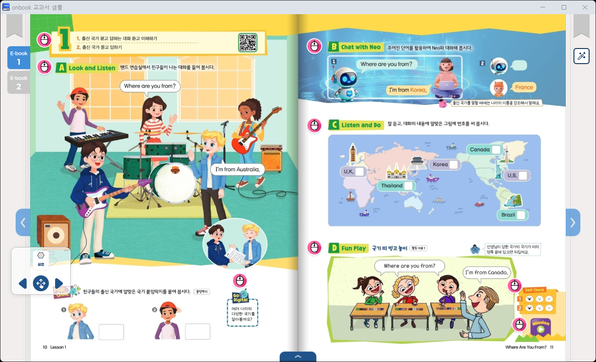
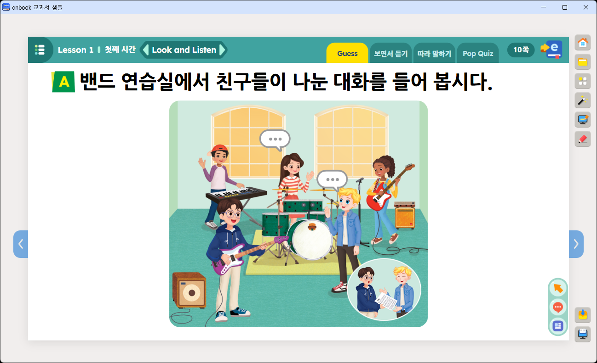
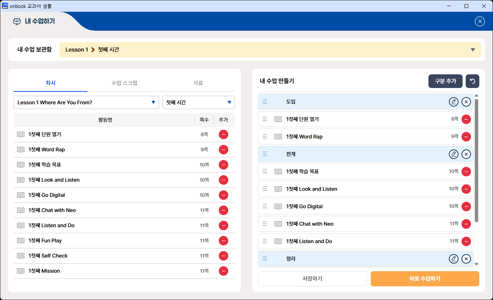

변경 이력최신 문서 v1.0.002
- 스와이프로 페이지 넘김 기능 추가 ebook 전용
-
설정 창에 퀵 메뉴·스와이프로 페이지 넘김
on/off 토글 기능 추가
(
draggableMenu·swipePage) - 앱 식별자 (package.json) 절 추가 — 책마다 고유값 지정 안내
- 최초 배포
개요
viewer OnBook 뷰어는 교과서(ebook)·콘텐츠·내 수업하기를 제공하는 Windows 데스크톱 뷰어입니다. 같은 구성을 웹 서버에 올려 웹 버전으로도 사용할 수 있습니다.
OnBook 뷰어를 기반으로 제작한 결과물 전체를 이 문서에서는 전자저작물이라 칭합니다. 이 문서는 콘텐츠 개발사가 전자저작물을 구성하는 데 필요한 내용을 안내합니다.
이 문서에서 다루는 내용
- OnBook 뷰어의 폴더 구조
-
책마다 지정해야 하는 앱 식별자(
package.json) -
세 가지 뷰어(ebook·contents·myclass)와
뷰어별 UI·부가 기능 설정(
settings.json), 책 탭(book_tab.json) -
뷰어 필수 라이브러리(
onbook.api.min.js)를 활용하는 방법 — 함수 상세는 API 가이드 참고 - 콘텐츠를 만들 때 지켜야 할 개발 규칙 및 권장 사항
- 메인 화면과 모듈(자료실·활동 도우미 등) 개발 방법
- 패키징 산출물을 뷰어에 배치하는 방법 — 간단 안내, 자세한 절차는 패키저 가이드 참고
- 설치본 구성·설정 방법
- 웹 버전으로 배포하는 방법
- 배포 후 업데이트 방법 2가지 — 전체 업데이트 · 단원 다운로드
관련 문서
| 문서 | 언제 보나요 |
|---|---|
| OnBook 뷰어 API 가이드 | 콘텐츠 HTML에서 페이지 이동 등 뷰어 기능을 사용할 때 (onbook.api 함수 목록) |
| ebook 패키저 가이드 | 교과서 ZIP을 만들 때 |
| contents 패키저 가이드 | 단원 콘텐츠 ZIP을 만들 때 |
폴더 구조
전자저작물은 교과서 폴더 단위로 구성됩니다. 콘텐츠 개발사가 다루는 작업 영역은 다음과 같습니다 (초록으로 표시).
(교과서 폴더)/ ← 폴더명 규칙은 설치본 만들기 참고 ├─ startup.exe ← 뷰어 실행 파일(런처) └─ platform/ ├─ onbook/ │ ├─ ebook/ ← 교과서 배치 │ ├─ contents/ ← 콘텐츠 배치 │ ├─ download/ ← 다운로드 자료 │ ├─ main/ ← 메인 화면 (개발사 제작·커스텀) │ ├─ modules/ ← 뷰어 모듈 (개발사 페이지 + 필수 모듈) │ ├─ settings.json ← 전역 설정 (진입 화면·앱 창) │ └─ … ├─ scene/ │ ├─ ebook/settings.json ← ebook 뷰어 설정 │ ├─ contents/settings.json ← contents 뷰어 설정 │ ├─ myclass/settings.json ← myclass 뷰어 설정 │ └─ … (뷰어 화면 앱 — 수정 금지) ├─ package.json ← 앱 식별자 (책마다 고유값) ├─ OnBookManager.exe ← 설치된 책 목록 확인·삭제 (설치본용) ├─ update-check.xml ← 전체 업데이트 설정 ├─ update-lesson.json ← 단원 다운로드 설정 └─ … (실행 엔진 — 수정 금지)
책(권) 단위 폴더 규칙
ebook/과 contents/는 같은 책(권) 단위
폴더를 사용합니다 — unit01: 책 1, unit02:
책 2 (수학 익힘책처럼 2권으로 구성되는 경우).
unit01·unit02 폴더명은 고정된
이름이므로 다른 이름으로 바꿀 수 없습니다.
교과서(ebook/)는 책 폴더 바로 아래에 교과서 파일이
오고, 콘텐츠(contents/)는 책 폴더 아래에
단원 폴더가 한 단계 더 들어갑니다.
platform/onbook/ebook/ ├─ book_tab/ ← 책 탭 설정 (2권 구성일 때만) ├─ unit01/ ← 책 1 — 교과서 배치 │ ├─ book.xml │ ├─ toc.xml │ └─ web/ └─ unit02/ ← 책 2 platform/onbook/contents/ ├─ unit01/ ← 책 1 │ ├─ lesson01/ ← 단원 — 콘텐츠 배치 │ │ ├─ toc.xml │ │ └─ web/ │ └─ lesson02/ └─ unit02/ ← 책 2 └─ lesson01/ …
뷰어 화면 살펴보기
제작한 교과서·콘텐츠가 뷰어에서 어떻게 표시되는지 화면별로 소개합니다. 각 뷰어의 메뉴·기능 구성은 뷰어 설정으로 커스터마이징합니다.
메인 화면
뷰어 실행 시 처음 표시되는 화면입니다. 아래는 기본 제공 샘플이며, 개발사가 자유롭게 디자인·개발할 수 있습니다 — 메인 화면 개발 참고.
ebook 뷰어 (교과서)
교과서 페이지를 넘기며 보는 화면입니다. 페이지 이동·썸네일 목록·그리기 도구를 제공하며, 메뉴 구성은 뷰어 설정에서 조정합니다. 책이 2권으로 구성된 경우 왼쪽 상단의 책 탭으로 두 책을 오갈 수 있습니다.

contents 뷰어 (차시 콘텐츠)
단원별 차시 콘텐츠를 페이지 순서대로 보는 화면입니다. 페이지 순서와 썸네일은 contents 패키저에서 정한 목록을 그대로 따릅니다. 메뉴 구성은 뷰어 설정에서 조정합니다.

myclass 뷰어 (내 수업하기)
교과서·콘텐츠 페이지를 골라 나만의 수업을 구성하는 화면입니다. 별도
제작물 없이 배치된 교과서·콘텐츠를 재사용하며, 수업 목록은
뷰어 설정의
myclass.lessons로 정의합니다.

onbook.api 라이브러리
onbook.api.min.js는 개발사 제작 페이지(콘텐츠·메인
화면·모듈)에서 뷰어 기능을 사용하기 위한
필수 라이브러리입니다.
로드 방법
원본 파일은 제공된 OnBook 뷰어 샘플의
platform/core/onbook.api.min.js입니다. 이 파일을 복사해
콘텐츠 개발 폴더 안 원하는 위치에 두고, 각
페이지에서 해당 위치로 상대 경로 로드합니다 — 배치 위치와 경로에
정해진 규칙은 없습니다.
<!-- 예: 콘텐츠 폴더의 common/js/ob/ 에 복사해 둔 경우 --> <script src="../../common/js/ob/onbook.api.min.js"></script>
무엇을 할 수 있나
| 분류 | 대표 함수 |
|---|---|
| 단원(패키지) 내 이동 |
goPage · goPageName ·
goPagePrev / goPageNext ·
goPageFirst / goPageLast —
현재 열려 있는 단원 안에서만 동작합니다.
|
| 모든 HTML 이동/열기 |
window.open — 다른 단원·교과서·개발사 제작 페이지
등 어떤 HTML로든 이동하거나 새 창으로 엽니다.
|
| 페이지 정보 조회 | getPageNum · getPageTotal 등 |
| 이전 화면으로 복귀 | historyBack |
| 실행·다운로드 |
openApp · openFolder ·
downloadFile
|
콘텐츠 개발 규칙 및 권장 사항
뷰어에서 동작하는 HTML 콘텐츠를 만들 때 지켜야 할 규칙과, 함께 권장하는 사항입니다. onbook.api 로드를 전제로 합니다.
규칙: 페이지 이동
뷰어·페이지 간 이동은 상황에 맞는 방법을 사용합니다. (API 가이드 참고)
| 상황 | 방법 |
|---|---|
| 화면 이동 / 새 창 열기 |
window.open(url, target, options)
|
| 단원 내 페이지 이동 |
goPage(번호) /
goPageName(파일명) 등
|
| 이전 화면으로 복귀 |
historyBack()
— 예: 같은 창에서 연 자료실에서 돌아올 때.
|
경로 작성 기준
window.open URL은 상대경로·절대경로 모두 가능합니다.
절대경로(/scene/...)를 쓰면 호출 위치와 무관하게
동작하도록 onbook.api가 배포 경로를 자동 보정합니다. 이때 절대경로의
기준(/)은 platform/ 폴더입니다 —
/scene/...는 platform/scene/...를
가리킵니다.
// 교과서(ebook) 열기 window.open("/scene/ebook/index.html?contentUrl=../../onbook/ebook/unit01/&page=8", "_top"); // 콘텐츠(contents) 열기 window.open("/scene/contents/index.html?contentUrl=../../onbook/contents/unit01/lesson01/&page=1", "_top"); // 내 수업하기(myclass) 열기 window.open("/scene/myclass/index.html?lesson=1&session=1", "_top"); // 기타 html(그림 사전·도움말 등) 새 창으로 열기 window.open("/onbook/modules/apps/dic/index.html", "_blank", { maximize: true });
contentUrl은 뷰어를 열 때
어떤 교과서·단원을 표시할지 지정하는 쿼리
파라미터입니다(위 예시의 ?contentUrl=…). 자동 보정되지
않으므로 절대경로 금지 — 뷰어 폴더(scene/ebook 등)
기준 상대경로 (../../onbook/...)만 사용하세요.
규칙: viewport 선언
차시 콘텐츠 페이지는 1280×720 해상도 기준으로
제작하고, 각 페이지의 <head>에 viewport를 다음과
같이 선언해 주세요. 뷰어가 이 값을 페이지의 원본 크기로 삼아 화면에
맞게 배율을 조정합니다.
<meta name="viewport" content="width=1280, height=720" />
웹에서 흔히 쓰는 width=device-width 형태로 선언하거나
선언을 누락하면 뷰어는 기본값 1280×720으로 간주합니다. 다른 해상도로
제작한 페이지는 배치가 어긋날 수 있으니 반드시 위 기준을 지켜
주세요.
권장: 핀치 줌 자제
일반적인 페이지에서는 화면 확대·축소(핀치 줌)가 동작하지 않도록 제작해 주시기를 권장합니다. 학교 현장에서 터치스크린 방식의 전자 칠판을 사용할 때, 두 명 이상의 학생이 동시에 글을 쓰거나 지우는 동작에서 의도치 않은 핀치 줌이 동작할 수 있고, 현장에서는 이를 오류로 판단하기 쉽습니다.
다만 지도, 명화·사진 감상, 세밀한 관찰 자료처럼 확대·축소가 필요한 콘텐츠라면 해당 영역에 한해 사용하셔도 됩니다.
권장: 페이지 파일명
페이지 파일명에 정해진 규칙은 없습니다. 다만 페이지를 식별하기 쉽고, 이름순으로 정렬했을 때 페이지 순서대로 늘어서도록 지어 주시기를 권장합니다. contents 패키저로 단원 zip 파일을 만들 때 다루기 편리합니다.
샘플 뷰어에서 사용하는 파일명 형식의 예입니다.
e{학년}_{단원}_{차시}_{코너}_{탭}.html 예: e5_01_02_01_01.html
개발 체크리스트
onbook.api.min.js를 각 페이지에서 로드했다.- 뷰어·페이지 이동을 규칙에 맞는 방법으로 구현했다.
-
차시 콘텐츠 각 페이지에 viewport를
width=1280, height=720으로 선언했다. - 일반 페이지에서 의도치 않은 핀치 줌이 동작하지 않는다.
- 페이지 파일명이 식별하기 쉽고 이름순 정렬 시 페이지 순서와 일치한다.
앱 식별자 (package.json)
platform/package.json의 name ·
domain은 PC 앱(NW.js)이 자신을 식별하는 값입니다.
책마다 서로 다른 고유값으로 지정해야 합니다.
platform/package.json { … "name": "onbook_een5a", ← 책 고유값 "domain": "onbook_een5a", ← 책 고유값 (name과 같게) … }
이 값이 앱의 저장소 주소가 됩니다. 뷰어가 저장하는 진도·필기·내 수업 데이터가 모두 이 값 단위로 분리되므로, 두 책이 같은 값을 쓰면 한 저장소를 공유해 데이터가 서로 섞입니다.
- 영문 소문자·숫자·언더스코어(
_)로 작성합니다. -
과목 코드 등 책을 구분할 수 있는 값을 넣습니다 — 예:
onbook_een5a -
name과domain은 같은 값으로 맞춥니다.
뷰어 설정 (settings.json)
뷰어 설정은 전역 설정 1개와
뷰어별 설정 3개로 나뉩니다. 파일 이름은 모두
settings.json입니다.
전역 설정 — platform/onbook/settings.json
뷰어의 진입 화면과 앱 창 동작을 정합니다. PC 앱(NW.js) 전용이며, 웹 버전에서는 창 관련 값이 적용되지 않습니다.
| 키 | 설명 |
|---|---|
main |
뷰어 실행 시 열리는 메인 화면 경로.
platform/onbook/ 폴더 기준 (예:
./main/index.html).
|
title |
교과서명. 앱 창 제목에 “교과서명 - 화면명” 형태로 붙습니다 (창 제목 참고). |
width · height |
시작 시 창을 화면 중앙에 정렬하기 위한 기준 (px). 메인 화면 크기와 같게 지정합니다. |
maximize |
최대화 상태로 시작 (true | false).
|
뷰어별 설정 — platform/scene/*/settings.json
각 뷰어의 메뉴 구성·기능·모듈 연결을 뷰어 종류별로 정합니다. 뷰어를 교과 특성에 맞게 조정하는 기본 파일입니다.
-
platform/scene/ebook/settings.json— ebook 뷰어 -
platform/scene/contents/settings.json— contents 뷰어 -
platform/scene/myclass/settings.json— myclass 뷰어
공통 설정 항목 — 뷰어별 설정
| 항목 | 설명 |
|---|---|
viewerType |
뷰어 종류. 수정하지 마세요. |
menu.items |
하단 메뉴에 표시할 항목과 순서. "---"는 구분선.
|
menu.features |
이 뷰어가 지원하는 기능 전체 목록.
items에 넣을 수 있는 항목의 참고 목록입니다.
|
quickMenu.items |
퀵 메뉴바 구성. UI 표시 여부는 draggableMenu로
정합니다. ebook 전용
|
rightMenu |
오른쪽 메뉴의 위(top)·아래(bottom)
배치. menu.items와 무관하게 항상 표시되며, 넣을
수 있는 항목은 함께 있는 features 참고 목록에서
고릅니다.
|
page |
페이지 표시.
double — 양면 보기 (true |
false).
ebook 전용
arrow — 페이지 이동 화살표.
visible(true | false)과
top(세로 위치, 예: "60%")을
지정합니다.
|
modules.main.url |
홈(메인 화면) 경로. |
modules.library |
자료실 경로와 열기 방식.
target — "_top"은 현재 창에서
페이지 이동, "_blank"는 새 창에서 열기.
maximize — "_blank"일 때만
동작하며, true면 모니터에 맞게 최대 창 크기로
열립니다 (true | false).
|
modules.toolkit.items |
활동 도우미 도구 목록. 도구별
label·icon·url·target·maximize를
지정해 추가·제거할 수 있습니다 (target·maximize
의미는 modules.library와 동일). icon은 35×30px입니다. 기본 도구에는 아이콘이 제공되며, 필요하면
직접 만들어 바꿀 수 있습니다 — 방법은
활동 도우미(toolkit) 제작을
참고하세요.
|
myData |
내 자료함 구성.
items — 내 자료함에 표시할 탭과 순서.
북마크 · 메모 ebook 전용,
하이라이트
contents 전용.
"하이라이트"가 있어야 페이지 하이라이트 기능이 켜집니다.
features — 내 자료함이 지원하는 탭 전체
목록. items에 넣을 수 있는 항목의 참고
목록입니다. memoPlacementMode — 메모 아이콘
위치 저장 기준 (pixel | percent).
percent는 페이지 대비 비율로 저장되어 화면 크기가
달라져도 같은 자리에 표시됩니다 (pixel은 픽셀
좌표).
|
print |
인쇄 옵션. ebook 전용
silent — 인쇄 창을 띄우지 않고 현재
페이지를 바로 인쇄합니다 (true |
false). previewEnabled — 인쇄
창 안에 인쇄할 페이지의 미리보기 이미지를 표시합니다 (true
| false).
|
draggableMenu |
퀵 메뉴 설정. 퀵 메뉴바에 표시할 항목은
quickMenu.items로 정합니다.
ebook 전용
enabled — 퀵 메뉴 기능 사용 여부 (true
| false). false면 뷰어의 설정
창에서도 항목이 숨겨져 사용자가 켤 수 없습니다. defaultOn
— 사용자가 설정을 바꾼 적 없을 때의 초기 상태 (true
| false).
|
swipePage |
스와이프 페이지 넘김 설정.
ebook 전용
enabled — 스와이프 넘김 기능 사용 여부
(true | false). false면
뷰어의 설정 창에서도 항목이 숨겨져 사용자가 켤 수 없습니다.
defaultOn — 사용자가 설정을 바꾼 적 없을
때의 초기 상태 (true | false).
|
bottomMenu |
하단 메뉴 구성. 하단 메뉴에 표시할 항목은
menu.items로 정합니다.
ebook 전용
enabled — 하단 메뉴를 보이거나 숨깁니다
(true | false). fixedSettingHelp
— 설정·도움말 항목을 메뉴 구성과 무관하게 항상 맨 끝에
고정합니다 (true | false).
|
수업 구성 myclass 전용
myclass 뷰어의
수업 목록은 myclass.lessons에 정의합니다. 단원(lessons) →
차시(sessions) → 섹션(sections) →
코너(corners) 구조이고, 각 코너가 콘텐츠 페이지 하나에
연결됩니다.
"myclass": { "lockContentLink": false, ← 콘텐츠 페이지 이동 차단 여부 (true | false) "uiType": "top-only", ← 상단 메뉴만(top-only) / 상단·하단 모두(all) "lessons": [{ "name": "Lesson 1", "title": "Lesson 1 Where Are You From?", "sessions": [{ "name": "첫째 시간", "sections": [{ "name": "도입", "corners": [{ "title": "단원 열기", "pageCount": 8, ← 코너의 교과서 쪽 번호 (목록에 "N쪽"으로 표시) "contentUrl": "../../onbook/contents/unit01/lesson01&pageName=e5_01_01_01_01.html" }] }] }] }] }
contentUrl은 콘텐츠 단원 경로 뒤에
&pageName=으로 진입 페이지 파일명을 이어붙인
값입니다. 표준 URL 쿼리(?)가 아니라
뷰어 전용 형식이므로, 경로 뒤에 ? 없이
&pageName=을 바로 붙입니다.
안내 문구 (messageCustom) myclass 전용
messageCustom으로 뷰어가 띄우는 안내 팝업의 문구를 바꿀
수 있습니다. key에 해당하는 상황이 발생하면
title(제목)과 explainText(설명)를 팝업으로
표시하며, 문구에는 <em>(강조) 등 HTML 태그를 쓸
수 있습니다. 현재 지원하는 key는 FileNotFound(수업에
추가한 자료 파일을 찾을 수 없을 때) 하나입니다.
"messageCustom": [ { "key": "FileNotFound", "title": "<em>파일</em>을 찾을 수 없습니다.", "explainText": "해당 파일의 이름 변경, 위치 이동 등을 확인하시고</br> 자료를 다시 추가하세요." } ]
settings.json은 JSON 문법(쉼표·따옴표)이 어긋나면
뷰어가 정상 동작하지 않습니다. 편집 후 뷰어를 다시 실행해 확인해
주세요.
창 제목
창 제목(웹 버전은 브라우저 탭 제목)은
각 화면 html의 <title>로 정해집니다. 자료실·도움말·활동 도우미처럼 개발사가 만든 화면도
마찬가지이며, 별도의 스크립트를 넣을 필요는 없습니다.
PC 앱은 모든 화면이 하나의 창 틀 안에서 열리므로, 뷰어가 현재 화면의
<title> 앞에 교과서명을 붙여 창
제목으로 표시합니다. 교과서명은
전역 설정의 title에
지정합니다.
platform/onbook/settings.json { "main": "./main/index.html", "title": "초등학교 영어 지도서 5", ← 교과서명 "width": 1280, "height": 720, "maximize": true }
| 화면 |
화면 html의 <title>
|
PC 창 제목 | 웹 탭 제목 |
|---|---|---|---|
| 메인 | 초등학교 영어 지도서 5 | 초등학교 영어 지도서 5 | 초등학교 영어 지도서 5 |
| ebook 뷰어 | 교과서 | 초등학교 영어 지도서 5 - 교과서 | 교과서 |
| 자료실 | 자료실 | 초등학교 영어 지도서 5 - 자료실 | 자료실 |
메인 화면은 <title>에 교과서명을 그대로 쓰기를
권장합니다.
웹 버전에서 사용자가 가장 먼저 보는 페이지이므로, “메인”
같은 표기보다 교과서명이 안내에 맞습니다. PC에서는 화면
<title>이 이미 교과서명으로 시작하면 교과서명을
덧붙이지 않으므로 제목이 중복되지 않습니다.
뷰어 3종의 기본 제목
platform/scene/ebook/index.html— 교과서platform/scene/contents/index.html— 콘텐츠-
platform/scene/myclass/index.html— 내 수업하기
title이 없으면 PC에서도 교과서명이 붙지
않고 화면의 <title>이 그대로 창 제목이 됩니다.
책 탭 설정 (book_tab.json)
책이 2권(unit01·unit02)으로 구성된 경우,
ebook 뷰어 왼쪽 상단에 책 탭 버튼을 표시해 두 책을
페이지 대응으로 이동할 수 있습니다. 설정 파일은
platform/onbook/ebook/book_tab/book_tab.json이고, 탭
버튼 이미지도 같은 폴더에 배치합니다.
책이 1권인 경우 book_tab/ 폴더가 없어도 됩니다 — 파일이
없으면 책 탭이 표시되지 않습니다.
작성 방법
{ "tabData": [ { "name": "ebook_unit01", ← 탭 식별자 (고정) "baseImage": "./tab01_0001.png", ← 기본 "hoverImage": "./tab01_0002.png", ← 기본 마우스 오버 "activeImage": "./tab01_0003.png", ← 현재 보는 책 "activeHoverImage": "./tab01_0004.png", ← 현재 보는 책 마우스 오버 "width": "50px", "height": "50px" }, { "name": "ebook_unit02", … } ], "pageTab": { ← 책 이름별로 분리 "ebook_unit01": [ { "page": 8, "targetUrl": "../../onbook/ebook/unit02/&page=6" }, { "page": 9, "targetUrl": "../../onbook/ebook/unit02/&page=7" }, … ], "ebook_unit02": [ { "page": 6, "targetUrl": "../../onbook/ebook/unit01/&page=8" }, { "page": 7, "targetUrl": "../../onbook/ebook/unit01/&page=9" }, … ] } }
| 항목 | 설명 |
|---|---|
tabData[].name |
탭 식별자 — ebook_unit01·ebook_unit02
고정. pageTab의 키와 연결됩니다.
|
tabData[] 이미지 4종 |
버튼 상태별 이미지 — 기본(baseImage) · 기본
마우스 오버(hoverImage) · 현재 보는
책(activeImage) · 현재 보는 책 마우스
오버(activeHoverImage).
book_tab/ 기준 상대 경로.
|
tabData[].width / height |
탭 버튼 크기. |
pageTab.ebook_unitXX |
ebook 교과서(unit01)의 페이지에서 다른 ebook
교과서(unit02)로 이동할 url을 정의한 목록.
목차·표지 등으로 두 책의 페이지가 어긋날 수 있어
ebook_unit01·ebook_unit02로 구분하여
작성합니다.
|
[].page |
현재 ebook 교과서에서 보고 있는 페이지. ebook 패키저에서 설정한 시작 페이지 기준의 페이지입니다. |
[].targetUrl |
탭을 눌렀을 때 이동할 다른 ebook 교과서의 위치. 교과서 경로
뒤에
&page=로 페이지 번호를
이어붙입니다
(예: ../../onbook/ebook/unit02/&page=6). 표준
URL 쿼리(?)가 아닌
뷰어 전용 형식입니다.
|
메인 화면 개발
platform/onbook/main/은 뷰어 실행 시 처음 표시되는
메인 화면으로, 콘텐츠 개발사가 직접
제작·커스터마이징하는 영역입니다. 기본 제공 구성은
index.html + js/index.js(링크 설정) +
css/·images/입니다. 메인 화면에서 연결하는
기능은 아래 세 가지로 나뉩니다.
onbook.api
교과서·콘텐츠·내 수업하기 뷰어 이동, 자료실 이동, 개발사 HTML 새 창
열기는 onbook.api를 사용합니다. 메인
index.html에 아래 스크립트를 반드시 포함하세요.
<!-- onbook.api (필수) — 경로는 예시, 파일 둔 위치에 맞춰 조정 --> <script src="./js/ob/onbook.api.min.js"></script>
메인 화면의 각 메뉴 버튼 클릭 시 아래 주소를
window.open으로 열도록 연결합니다.
| 기능 | 연결 방법 |
|---|---|
| 교과서 열기 (ebook) |
/scene/ebook/index.html?contentUrl=(교과서
경로)&page=(쪽)
|
| 콘텐츠 열기 (contents) |
/scene/contents/index.html?contentUrl=(단원
경로)&page=(순번)
|
| 내 수업하기 (myclass) |
/scene/myclass/index.html?lesson=(단원)&session=(차시)
|
| 자료실 | /onbook/modules/library/index.html로 이동. |
| 개발사 제작 HTML 새 창 |
window.open(url, 창이름, 옵션) —
API 가이드 — window.open
참고.
|
진도 보기
진도 보기(progress) 모듈 UI·기능을 쓰려면 메인
index.html에 아래 css/js를 반드시 포함하세요.
경로·파일명을 바꾸거나 제거하면 동작하지 않습니다.
modules/progress/ 폴더도 삭제·이름 변경하지 마세요.
<!-- head — 진도 보기(progress) 모듈 CSS --> <link href="../modules/progress/css/index.min.css" rel="stylesheet" /> <!-- body 하단 — 진도 보기(progress) 모듈 JS — OPEN_PROGRESS_VIEW() 제공 --> <script defer src="../modules/progress/js/index.min.js"></script>
progress 모듈은 <div id="root"> 안에 자기 UI를
스스로 만들어 넣습니다. 메인 화면에 별도 HTML을 추가할 필요 없이,
css/js 참조만 유지하면 window.OPEN_PROGRESS_VIEW()
호출로 진도 보기 화면을 열 수 있습니다.
진도 보기 버튼의 클릭 이벤트에서
window.OPEN_PROGRESS_VIEW()를 호출합니다.
document.querySelector('[data-type="progress"]').addEventListener("click", function () { if (typeof window.OPEN_PROGRESS_VIEW === "function") { window.OPEN_PROGRESS_VIEW(); } });
단원 다운로드
단원 다운로드(updateLesson) 모듈을 쓰려면 메인
index.html에 아래 css/js를 반드시 포함하세요.
경로·파일명을 바꾸거나 제거하면 동작하지 않습니다.
modules/updateLesson/ 폴더도 삭제·이름 변경하지 마세요.
<!-- head — 단원 다운로드(updateLesson) 모듈 CSS --> <link href="../modules/updateLesson/css/index.min.css" rel="stylesheet" /> <!-- body 하단 — 단원 다운로드(updateLesson) 모듈 JS — INIT/CHECK/START 함수 제공 --> <script defer src="../modules/updateLesson/js/index.min.js"></script>
단원 선택 <select> · 다운로드
<button> · 완료 표시용
<span>으로 UI를 구성하고, updateLesson 모듈이
제공하는 함수 3개를 연결합니다.
update-lesson.json 작성법·서버 업로드 규칙은
단원 다운로드 절을 참고하세요.
| 함수 | 호출 시점 | 동작 |
|---|---|---|
INIT_UPDATE_LESSON(onReady) |
메인 화면 로드 시 |
update-lesson.json의 enabled가
true면(=PC 설치본) onReady 콜백이
실행됩니다. 이 콜백에서 다운로드 UI를 표시합니다.
|
CHECK_LESSON_UPDATE(index) |
단원 선택 시 | 이미 받은 단원인지 반환합니다. 미다운로드면 다운로드 버튼을, 이미 받았으면 완료 표시를 보여줍니다. |
START_LESSON_UPDATE(index, callback) |
다운로드 버튼 클릭 시 |
다운로드를 시작합니다(진행 창은 모듈이 자동 표시). 완료되면
callback이 실행되어 버튼을 완료 표시로 바꿉니다.
|
function updateLessonUI(index) { var hasUpdate = window.CHECK_LESSON_UPDATE(index); downloadBtn.style.display = hasUpdate ? "inline-block" : "none"; doneLabel.style.display = hasUpdate ? "none" : "inline-block"; } select.addEventListener("change", function () { updateLessonUI(parseInt(select.value, 10)); }); downloadBtn.addEventListener("click", function () { var index = parseInt(select.value, 10); window.START_LESSON_UPDATE(index, function () { updateLessonUI(index); }); }); window.INIT_UPDATE_LESSON(function () { downloadArea.style.display = ""; // PC 설치본일 때만 콜백 실행 → UI 표시 });
INIT_UPDATE_LESSON의 콜백이 실행되지 않아
다운로드 UI가 자연히 표시되지 않습니다. PC/웹 여부를 별도로 분기할
필요는 없습니다.
모듈 개발
platform/onbook/modules/는 메인 화면과 각 뷰어에서
사용하는 부가 페이지 모음입니다. 필수 모듈과
개발사 제작 영역으로 나뉩니다.
| 폴더 | 구분 | 설명 |
|---|---|---|
progress/ |
필수 — 삭제 금지 | 진도 보기. 메인 화면이 직접 사용합니다. |
updateLesson/ |
필수 — 삭제 금지 | 단원 다운로드. 메인 화면이 직접 사용합니다. |
library/ |
개발사 제작 | 자료실 — 교과 자료를 모아 보여주는 페이지. |
toolkit/ |
개발사 제작 | 활동 도우미 — 칠판·타이머·모둠 점수판·발표 도우미 등 수업 도구 페이지. |
apps/ |
개발사 제작 | 기타 페이지 — 사전·게임·사용 설명서 등 자유 구성. |
common/ |
공용 | 모듈들이 함께 쓰는 리소스(스크립트·폰트·오디오 등). |
모듈 연결 경로 규칙
-
메인 화면에서:
../modules/…— 예:../modules/library/index.html -
뷰어 설정(settings.json)에서:
../../onbook/modules/…— 예:../../onbook/modules/toolkit/timer.html
자료실(library) 제작
자료실은 교과 자료를 모아 보여주는 페이지로, 개발사가 자유롭게 제작합니다.
-
자료 파일(문서·PPT·PDF 등)은
platform/onbook/download/폴더에 배치합니다. -
자료의 실행·다운로드는 onbook.api 함수를 사용합니다 —
window.open(새 창으로 열기) ·openApp(연결 프로그램으로 실행) ·openFolder(폴더 열기) ·downloadFile(파일 다운로드).
활동 도우미(toolkit) 제작
칠판·타이머·모둠 점수판·발표 도우미 같은 수업 도구 페이지입니다. 다음 순서로 새 도구를 추가합니다.
-
도구 페이지 제작 — HTML 페이지를
platform/onbook/modules/toolkit/에 만듭니다. -
뷰어 설정에 등록 — 노출할 뷰어의
settings.json→modules.toolkit.items에 항목을 추가해야 활동 도우미 메뉴에 나타납니다.속성 설명 label메뉴에 표시할 도구 이름 icon아이콘 이미지 경로 (35×30px). 기본 제공 도구에는 아이콘이 준비되어 있어 그대로 두면 됩니다. 직접 만들어 쓰려면 _base·_hover2종을 개발사 영역(예:onbook/modules/toolkit/)에 두고,url과 같은../../onbook/…형식으로_base파일을 지정합니다. 마우스를 올리면 같은 이름의_hover파일이 자동으로 표시됩니다.url도구 페이지 경로 — ../../onbook/modules/toolkit/…target_blank(새 창) /_top(현재 창)maximize새 창을 최대화로 열지 여부
패키징과 배치
패키징
완성한 제작물은 패키저로 ZIP을 만듭니다. 절차는 각 패키저 가이드를 참고하세요.
| 제작물 | 사용 도구 |
|---|---|
| 교과서 | ebook 패키저 가이드 |
| 단원 콘텐츠 | contents 패키저 가이드 |
교과서(ebook) 배치
교과서 ZIP의 압축을 풀어 내용물이 책 폴더(unitXX/) 바로
아래에 오도록 배치합니다.
platform/onbook/ebook/unit01/ ├─ book.xml ├─ toc.xml └─ web/ ← 페이지 HTML · css · js · page_data · page_images · page_thumbnails
콘텐츠(contents) 배치
콘텐츠 ZIP의 압축을 풀어 내용물이 단원 폴더(lessonXX/)
바로 아래에 오도록 배치합니다. 자세한 내용은
contents 패키저 가이드 — 뷰어 배치를 참고하세요.
책 폴더(unit01·unit02)와 달리
단원 폴더 이름은 개발사가 자유롭게 정할 수 있습니다
— 예: lesson01 ~ lesson12,
special01 ~ special05,
review01, review02
platform/onbook/contents/unit01/lesson01/ ├─ toc.xml └─ web/ ← toc.xhtml · page_thumbnails · 원본 파일들
다운로드 자료 (download/)
platform/onbook/download/는 자료실·수업·활동 등에서
쓰는 자료 파일을 보관하는 폴더입니다. 콘텐츠에서 이 파일들을
onbook.api(파일 열기·폴더 열기·다운로드)로 연결해 사용합니다.
배치 후 확인
배치를 마치면 뷰어를 실행해 메인 화면에서 교과서 / 콘텐츠로 들어가 실제 표시를 확인합니다.
설치본 만들기
USB 등 설치 매체로 배포할 때는, 앞서 구성한
교과서 폴더 위에 배포 루트를 두고
설치 런처(Start.exe)와 설치 정보 파일을 함께 담습니다.
배포 루트 구성은 다음과 같습니다.
(배포 루트)/ ├─ Start.exe ← 설치 런처 (설치 매체 실행 파일) ├─ start.ini ← 설치 정보 (아래 표 참고) ├─ autorun.inf ← 자동 실행 설정 ├─ images/ ← 설치 화면 이미지 (디자인 변경 참고) │ ├─ bg.png ← 배경 │ ├─ usb_normal.png ← [바로 실행] 기본 │ ├─ usb_over.png ← [바로 실행] 마우스 올림 │ ├─ usb_down.png ← [바로 실행] 누름 │ ├─ install_normal.png ← [복사 후 실행] 기본 │ ├─ install_over.png ← [복사 후 실행] 마우스 올림 │ └─ install_down.png ← [복사 후 실행] 누름 └─ (교과서 폴더)/ ← start.ini의 TITLE과 같은 이름 ├─ startup.exe ← 뷰어 실행 파일(런처) └─ platform/ ← 뷰어 본체 (폴더 구조 참고)
배포 루트의 각 항목은 개발사(출판사)가 다음과 같이 정합니다.
설치 정보 (start.ini)
[CONTENT] · [INSTALL] ·
[LAYOUT] 세 섹션으로 구성됩니다. 섹션
헤더([…])는 .ini 문법이므로 반드시
포함해야 합니다.
[CONTENT] EDITION=2022개정 TITLE=초등학교 영어 지도서 5 전자책등 P_CODE=AMT1 SUBJECT_CODE=EEN5A DIRECT_RUN_MSG=바로 실행하면 업데이트를 사용할 수 없습니다. \n계속하시겠습니까? [INSTALL] INSTALL_DIR=C:\OnBook REQUIRED_SPACE=9000000000 [LAYOUT] WINDOW_SIZE=850,850 BTN_PLAY_POS=425,676 BTN_INSTALL_POS=425,776
| 항목 | 설명 |
|---|---|
| [CONTENT] — 교과서 정보 | |
EDITION |
교과서 판. 예: 2022개정 |
TITLE |
교과서 이름. 배포 루트의 교과서 폴더명과 반드시 동일해야 합니다. 설치 프로그램의 창 제목으로도 사용됩니다. |
P_CODE |
제품(출판사) 코드. 예: AMT1 |
SUBJECT_CODE |
과목 코드. 출판사의 과목 코드 규칙에 맞게 작성합니다. 예:
EEN5A (초등·영어·5학년·A 식으로 구성)
|
DIRECT_RUN_MSG |
설치하지 않고 바로 실행할 때 표시할 안내 문구.
\n으로 줄을 바꿉니다.
|
| [INSTALL] — 설치 옵션 | |
INSTALL_DIR |
기본 설치 경로 (사용자가 설치 시 변경 가능). 예:
C:\OnBook
|
REQUIRED_SPACE |
설치에 필요한 최소 디스크 공간 (바이트). 예:
9000000000 (약 9GB)
|
| [LAYOUT] — 설치 화면 배치 | |
WINDOW_SIZE |
설치 화면 크기(px). 배경 이미지(images/bg.png)의
가로,세로 크기를 그대로 지정합니다.
|
BTN_PLAY_POS |
바로 실행
버튼(images/usb_*.png)의 x,y 위치 —
버튼 중심 기준.
|
BTN_INSTALL_POS |
복사 후 실행(설치)
버튼(images/install_*.png)의
x,y 위치 — 버튼 중심 기준.
|
설치 시 다음 경로로 복사됩니다.
{INSTALL_DIR}\{P_CODE}_{SUBJECT_CODE}_{EDITION}\{TITLE}\ 예: C:\OnBook\AMT1_EEN5A_2022개정\초등학교 영어 지도서 5 전자책등\
start.ini와 autorun.inf는 반드시
EUC-KR 인코딩으로 저장해 주세요. UTF-8로 저장하면
한글이 깨집니다.
교체할 수 있는 요소
-
autorun.inf—label을 교과서명으로 지정. -
images/— 설치 화면의 배경·버튼 이미지. 아래 디자인 변경 참고. -
platform/boot/icon.png— 설치본 관리 프로그램 (OnBookManager)의 책 목록에 표시되는 교과서 아이콘. 30×30px 영역에 맞춰 표시되며, 파일이 없으면 아이콘 자리가 빈칸으로 나옵니다.
디자인 변경
images/의 PNG 7개를 교체하면 설치 화면을 원하는
디자인으로 바꿀 수 있습니다.
파일명은 그대로 두고 내용만 교체합니다.
| 파일 | 설명 |
|---|---|
bg.png |
배경. 가로·세로를 start.ini의
WINDOW_SIZE와 같게 맞춥니다. 크기가 다르면 화면에
맞춰 늘어나 찌그러져 보입니다.
|
usb_normal.pngusb_over.pngusb_down.png
|
바로 실행 버튼의 기본 · 마우스 올림 · 누름 상태. |
install_normal.pnginstall_over.pnginstall_down.png
|
복사 후 실행 버튼의 기본 · 마우스 올림 · 누름 상태. |
버튼 디자인 규칙
-
크기는 자유입니다.
[LAYOUT]의BTN_PLAY_POS·BTN_INSTALL_POS가 버튼 중심 좌표라, 크기를 바꿔도 위치는 그대로 유지됩니다. -
단, 한 버튼의 세 상태는 크기가 같아야 합니다.
_over·_down이_normal과 크기가 다르면 마우스를 올릴 때 버튼이 한쪽으로 어긋납니다. -
_over·_down은 생략할 수 있습니다. 파일이 없으면_normal이 대신 표시됩니다._normal은 필수입니다. 파일명이 틀려도 오류 없이_normal로 표시되므로, 눌러도 반응이 없다면 파일명부터 확인하세요. -
버튼이
WINDOW_SIZE밖으로 나가지 않도록 좌표를 확인하세요.
웹 버전으로 배포
PC에서 배치·확인을 마친 뷰어는 웹 서버에 올려 브라우저로도 사용할 수
있습니다. platform/ 안의 onbook/과
scene/ 두 폴더만 웹 루트에 나란히
업로드합니다.
(웹 루트)/ ├─ onbook/ ← 교과서·콘텐츠 포함 └─ scene/
브라우저 진입 주소는 다음과 같습니다.
https://(웹 루트)/onbook/main/index.html
접속하면 PC 버전과 동일한 메인 화면이 표시됩니다. 교과서·콘텐츠 표시를 같은 방법으로 확인하세요.
업데이트 개요
배포한 전자저작물은 두 가지 방법으로 갱신할 수 있습니다. 두 방법 모두 PC 설치본 전용입니다.
| 구분 | 전체 업데이트 | 단원 다운로드 |
|---|---|---|
| 용도 | 뷰어·콘텐츠 등 모든 파일의 수정·갱신 | 배포본에서 제외한 단원 콘텐츠의 추가 설치 |
| 실행 시점 | 뷰어 실행 시 자동으로 새 버전 확인 | 메인 화면에서 사용자가 단원별로 다운로드 |
| 설정 파일 | platform/update-check.xml |
platform/update-lesson.json |
| 서버 파일 | 버전별 ZIP — {id}_{버전}.zip |
단원별 ZIP — {단원 id}.zip |
전체 업데이트 (update-check.xml)
뷰어 실행 시 서버의 새 버전을 확인해, 갱신 파일을 내려받아 적용하는 방식입니다. 뷰어를 포함한 전자저작물의 모든 파일을 갱신할 수 있습니다.
동작 방식
-
뷰어 실행 시
platform/update-check.xml의 서버 정보로 서버의 버전 목록을 확인합니다. - 새 버전이 있으면 사용자에게 업데이트 안내 창이 표시되고, 수락하면 해당 버전 ZIP을 내려받습니다.
-
ZIP의 내용물을
platform/위에 덮어쓰기합니다. ZIP에 없는 기존 파일은 그대로 유지됩니다. - 적용된 버전이 기록되어 다음 실행부터는 다시 받지 않습니다.
update-check.xml 작성
배포본의 platform/update-check.xml에 서버 정보를
기입합니다.
<update-check> <server url="https://(업데이트 서버 주소)" edition="2022book" id="EEN5A" /> <enabled>true</enabled> </update-check>
| 항목 | 설명 |
|---|---|
server url |
업데이트 서버 기본 주소. |
server edition |
교과서 판 구분. 서버 경로에 사용됩니다. |
server id |
교재 식별자. 서버 경로와 ZIP 파일명에 사용됩니다. |
enabled |
true/false. false면
업데이트 확인을 하지 않습니다.
|
서버 업로드 규칙
서버에는 다음 두 가지를 올립니다. 경로 규칙은 고정입니다.
{url}/{edition}/{id}/update-check.xml ← 버전 목록 (릴리스마다 <update> 항목 추가) {url}/{edition}/{id}/{id}_{버전}.zip ← 버전별 갱신 ZIP (예: EEN5A_1.0.1.zip)
서버의 update-check.xml에는 릴리스한 버전을
<update> 항목으로 나열합니다.
<update date="2026-08-01" note="1차 업데이트">1.0.1</update>
갱신 ZIP의 내부는
최상위에 platform/ 폴더를 두고, 갱신할
파일을 원래 경로 그대로 배치합니다.
EEN5A_1.0.1.zip └─ platform/ └─ onbook/contents/unit01/lesson01/… ← 갱신할 파일만, 원래 경로 그대로
버전 관리 규칙
-
버전은
1.0.1처럼 숫자 3자리 형식(x.y.z)을 지켜 주세요. 버전 크기 비교로 업데이트 여부를 판단합니다. - 릴리스마다 이전보다 큰 버전으로 올립니다.
-
ZIP 파일명의 버전과
<update>항목의 버전이 일치해야 합니다.
단원 다운로드 (update-lesson.json)
전자저작물 용량을 줄이기 위해 일부 단원 콘텐츠를 배포본에서 제외하고, 사용자가 메인 화면에서 필요한 단원만 내려받아 설치하게 하는 기능입니다.
동작 방식
-
메인 화면의 단원 다운로드 UI에서 사용자가 미다운로드 단원의
다운로드를 누릅니다. -
서버에서
{downloadUrl}/{단원 id}.zip을 내려받아platform/onbook/아래에 설치합니다. 이미 있는 파일은 건너뜁니다. -
완료되면 해당 단원이
다운 됨상태로 기록되고, 재실행 후에도 유지됩니다. - 내려받지 않은 단원의 콘텐츠를 열면 안내 후 메인 화면으로 돌아갑니다(자동 제한).
update-lesson.json 작성
{ "enabled": true, "downloadUrl": "https://(다운로드 서버 주소)", "lessons": [ { "id": "lesson01", "index": 0, "name": "1단원", "downloaded": false }, { "id": "lesson02", "index": 1, "name": "2단원", "downloaded": false } ] }
| 항목 | 설명 |
|---|---|
enabled |
false면 단원 다운로드 기능을 사용하지 않습니다.
|
downloadUrl |
단원 ZIP을 받을 기본 주소.
{downloadUrl}/{id}.zip으로 조합됩니다.
|
lessons[].id |
단원 식별자. ZIP 파일명과 콘텐츠의 단원 폴더명 (lesson01
등)에 대응합니다.
|
lessons[].index |
메인 화면 단원 다운로드 UI의 순번과 매칭합니다. |
lessons[].name |
다운로드 진행 창에 표시할 단원 이름. |
lessons[].downloaded |
배포 시 false로 둡니다. 다운로드가 끝나면 뷰어가
자동으로 true로 기록합니다.
|
개발사가 준비할 것
- update-lesson.json 작성 — 위 형식으로 단원 목록을 정의합니다.
- 배포본에서 해당 단원 제외 — 내려받게 할 단원의 콘텐츠는 배포본에 넣지 않습니다.
-
메인 화면 UI 구현 — updateLesson 모듈이 제공하는
함수를 호출합니다.
함수 역할 INIT_UPDATE_LESSON(onReady)설정을 읽어 기능을 초기화합니다. CHECK_LESSON_UPDATE(index)해당 단원이 미다운로드 상태인지 확인합니다 (다운로드 버튼 노출 판단용). START_LESSON_UPDATE(index, callback)다운로드·설치를 실행합니다. 진행 창은 자동 표시됩니다. -
서버에 단원 ZIP 업로드 — 파일명은
{id}.zip, 내부는platform/onbook/기준 경로 구조로 만듭니다.lesson01.zip ├─ contents/unit01/lesson01/… ├─ contents/unit02/lesson01/… └─ download/lesson01/…